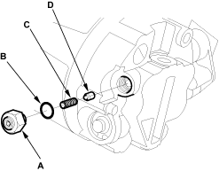

- Reassemble the clutch in the reverse order of disassembly and note these items:
Install the clutch coil with the wire side facing down and align the boss on the clutch coil with the hole in the compressor assembly.
- Clean the pulley assembly and compressor assembly sliding surfaces with contact cleaner or other non-petroleum solvent.
- Install new retaining rings, note the installation direction and make sure they are fully seated in the groove.
- Make sure that the pulley assembly turns smoothly after it is reassembled.
- Route and clamp the wires properly or they can be damaged by the pulley assembly.
- Discharge the refrigerant.
- Remove the relief valve (A), the O-ring (B), the spring (C) and the valve (D). Plug the opening to keep foreign matter from entering the system and the compressor oil from running out.

- Clean the mating surfaces.
- Replace the O-ring with a new one at the relief valve and apply a thin coat of refrigerant oil before installing it.
- Remove the plug and install and tighten the relief valve.
- Charge the system.
- Check for system performance (see page 21-30).